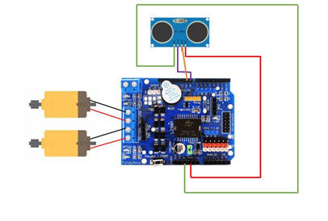
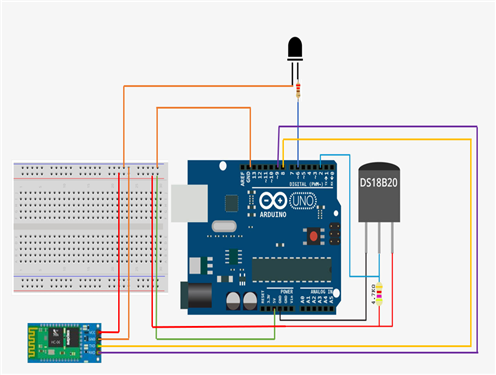

- ○ 프로젝트 소개
- 온도 센서를 사용한 고온, 화재 감지하는 자율주행 화재 경보 자동차
- 블루투스 센서를 사용하여 휴대폰으로 화재 정보 수신 가능
- 고온, 화재 신호 입력 후 시각, 청각 경보 발생
- ○ 개발배경 및 필요성
- 무인 시스템으로 인명 피해 감소
- 자율 주행 화재 경보 자동차로 소방업계 인력난 해결 가능
- 동적 방화 시장 중 ICT, IoT기술 결합 제품이 미래 소방 시장 선도
- ○ 설계도
|  |
 |
| 자율 주행 파트 설계도 |
화재 경보 파트 설계도 |
- 아두이노 Uno에 모터 드라이버 적층, 애물 감지시 자동차 회피를 위한 소스코드 작성
- FQ-014 5V 능동 DC부저, LED, HC-06 결선, 설정온도보다 높은 온도 감지시, 부저와 LED 신호 출력
- HC-06 블루투스 모듈을 통한 스마트폰과의 무선 통신
- 화재경보기 시리얼 모니터 값을 스마트폰으로 전송 후 출력
- ○ 작품 소개 영상 및 시연 영상